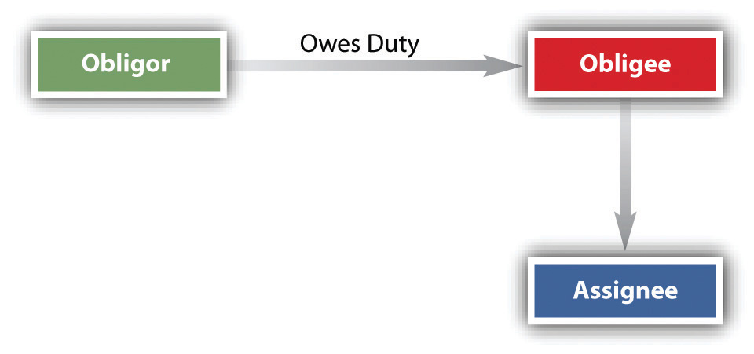

Contracts create rights and duties. By an assignmentThe passing or delivering by one person to another of the right to a contract benefit., an obligeeOne to whom an obligation is owed. (one who has the right to receive a contract benefit) transfers a right to receive a contract benefit owed by the obligorOne who owes an obligation. (the one who has a duty to perform) to a third person (assigneeOne to whom the right to receive benefit of a contract is passed or delivered.); the obligee then becomes an assignorOne who agrees to allow another to receive the benefit of a contract. (one who makes an assignment).
The Restatement (Second) of Contracts defines an assignment of a right as “a manifestation of the assignor’s intention to transfer it by virtue of which the assignor’s right to performance by the obligor is extinguished in whole or in part and the assignee acquires the right to such performance.”Restatement (Second) of Contracts, Section 317(1). The one who makes the assignment is both an obligee and a transferor. The assignee acquires the right to receive the contractual obligations of the promisor, who is referred to as the obligor (see Figure 14.1 "Assignment of Rights"). The assignor may assign any right unless (1) doing so would materially change the obligation of the obligor, materially burden him, increase his risk, or otherwise diminish the value to him of the original contract; (2) statute or public policy forbids the assignment; or (3) the contract itself precludes assignment. The common law of contracts and Articles 2 and 9 of the Uniform Commercial Code (UCC) govern assignments. Assignments are an important part of business financing, such as factoring. A factorA person who pays money to receive another’s executory contractual benefits. is one who purchases the right to receive income from another.
Figure 14.1 Assignment of Rights
To effect an assignment, the assignor must make known his intention to transfer the rights to the third person. The assignor’s intention must be that the assignment is effective without need of any further action or any further manifestation of intention to make the assignment. In other words, the assignor must intend and understand himself to be making the assignment then and there; he is not promising to make the assignment sometime in the future.
Under the UCC, any assignments of rights in excess of $5,000 must be in writing, but otherwise, assignments can be oral and consideration is not required: the assignor could assign the right to the assignee for nothing (not likely in commercial transactions, of course). Mrs. Franklin has the right to receive $750 a month from the sale of a house she formerly owned; she assigns the right to receive the money to her son Jason, as a gift. The assignment is good, though such a gratuitous assignment is usually revocable, which is not the case where consideration has been paid for an assignment.
For the assignment to become effective, the assignee must manifest his acceptance under most circumstances. This is done automatically when, as is usually the case, the assignee has given consideration for the assignment (i.e., there is a contract between the assignor and the assignee in which the assignment is the assignor’s consideration), and then the assignment is not revocable without the assignee’s consent. Problems of acceptance normally arise only when the assignor intends the assignment as a gift. Then, for the assignment to be irrevocable, either the assignee must manifest his acceptance or the assignor must notify the assignee in writing of the assignment.
Notice to the obligor is not required, but an obligor who renders performance to the assignor without notice of the assignment (that performance of the contract is to be rendered now to the assignee) is discharged. Obviously, the assignor cannot then keep the consideration he has received; he owes it to the assignee. But if notice is given to the obligor and she performs to the assignor anyway, the assignee can recover from either the obligor or the assignee, so the obligor could have to perform twice, as in Exercise 2 at the chapter’s end, Aldana v. Colonial Palms Plaza. Of course, an obligor who receives notice of the assignment from the assignee will want to be sure the assignment has really occurred. After all, anybody could waltz up to the obligor and say, “I’m the assignee of your contract with the bank. From now on, pay me the $500 a month, not the bank.” The obligor is entitled to verification of the assignment.
An assignment of rights effectively makes the assignee stand in the shoes ofAn assignee takes no greater rights than his assignor had. the assignor. He gains all the rights against the obligor that the assignor had, but no more. An obligor who could avoid the assignor’s attempt to enforce the rights could avoid a similar attempt by the assignee. Likewise, under UCC Section 9-318(1), the assignee of an account is subject to all terms of the contract between the debtor and the creditor-assignor. Suppose Dealer sells a car to Buyer on a contract where Buyer is to pay $300 per month and the car is warranted for 50,000 miles. If the car goes on the fritz before then and Dealer won’t fix it, Buyer could fix it for, say, $250 and deduct that $250 from the amount owed Dealer on the next installment (called a setoff). Now, if Dealer assigns the contract to Assignee, Assignee stands in Dealer’s shoes, and Buyer could likewise deduct the $250 from payment to Assignee.
The “shoe rule” does not apply to two types of assignments. First, it is inapplicable to the sale of a negotiable instrument to a holder in due course. Second, the rule may be waived: under the UCC and at common law, the obligor may agree in the original contract not to raise defenses against the assignee that could have been raised against the assignor.Uniform Commercial Code, Section 9-206. While a waiver of defensesSurrender by a party of legal rights otherwise available to him or her. makes the assignment more marketable from the assignee’s point of view, it is a situation fraught with peril to an obligor, who may sign a contract without understanding the full import of the waiver. Under the waiver rule, for example, a farmer who buys a tractor on credit and discovers later that it does not work would still be required to pay a credit company that purchased the contract; his defense that the merchandise was shoddy would be unavailing (he would, as used to be said, be “having to pay on a dead horse”).
For that reason, there are various rules that limit both the holder in due course and the waiver rule. Certain defenses, the so-called real defenses (infancy, duress, and fraud in the execution, among others), may always be asserted. Also, the waiver clause in the contract must have been presented in good faith, and if the assignee has actual notice of a defense that the buyer or lessee could raise, then the waiver is ineffective. Moreover, in consumer transactions, the UCC’s rule is subject to state laws that protect consumers (people buying things used primarily for personal, family, or household purposes), and many states, by statute or court decision, have made waivers of defenses ineffective in such consumer transactionsA contract for household or domestic purposes, not commercial purposes.. Federal Trade Commission regulations also affect the ability of many sellers to pass on rights to assignees free of defenses that buyers could raise against them. Because of these various limitations on the holder in due course and on waivers, the “shoe rule” will not govern in consumer transactions and, if there are real defenses or the assignee does not act in good faith, in business transactions as well.
The general rule—as previously noted—is that most contract rights are assignable. But there are exceptions. Five of them are noted here.
When an assignment has the effect of materially changing the duties that the obligor must perform, it is ineffective. Changing the party to whom the obligor must make a payment is not a material change of duty that will defeat an assignment, since that, of course, is the purpose behind most assignments. Nor will a minor change in the duties the obligor must perform defeat the assignment.
Several residents in the town of Centerville sign up on an annual basis with the Centerville Times to receive their morning paper. A customer who is moving out of town may assign his right to receive the paper to someone else within the delivery route. As long as the assignee pays for the paper, the assignment is effective; the only relationship the obligor has to the assignee is a routine delivery in exchange for payment. Obligors can consent in the original contract, however, to a subsequent assignment of duties. Here is a clause from the World Team Tennis League contract: “It is mutually agreed that the Club shall have the right to sell, assign, trade and transfer this contract to another Club in the League, and the Player agrees to accept and be bound by such sale, exchange, assignment or transfer and to faithfully perform and carry out his or her obligations under this contract as if it had been entered into by the Player and such other Club.” Consent is not necessary when the contract does not involve a personal relationship.
When it matters to the obligor who receives the benefit of his duty to perform under the contract, then the receipt of the benefit is a personal rightThe right or duty of a particular person to perform or receive contract duties or benefits; cannot be assigned. that cannot be assigned. For example, a student seeking to earn pocket money during the school year signs up to do research work for a professor she admires and with whom she is friendly. The professor assigns the contract to one of his colleagues with whom the student does not get along. The assignment is ineffective because it matters to the student (the obligor) who the person of the assignee is. An insurance company provides auto insurance covering Mohammed Kareem, a sixty-five-year-old man who drives very carefully. Kareem cannot assign the contract to his seventeen-year-old grandson because it matters to the insurance company who the person of its insured is. Tenants usually cannot assign (sublet) their tenancies without the landlord’s permission because it matters to the landlord who the person of their tenant is. Section 14.4.1 "Nonassignable Rights", Nassau Hotel Co. v. Barnett & Barse Corp., is an example of the nonassignability of a personal right.
Various federal and state laws prohibit or regulate some contract assignment. The assignment of future wages is regulated by state and federal law to protect people from improvidently denying themselves future income because of immediate present financial difficulties. And even in the absence of statute, public policy might prohibit some assignments.
Assignability of contract rights is useful, and prohibitions against it are not generally favored. Many contracts contain general language that prohibits assignment of rights or of “the contract.” Both the Restatement and UCC Section 2-210(3) declare that in the absence of any contrary circumstances, a provision in the agreement that prohibits assigning “the contract” bars “only the delegation to the assignee of the assignor’s performance.”Restatement (Second) of Contracts, Section 322. In other words, unless the contract specifically prohibits assignment of any of its terms, a party is free to assign anything except his or her own duties.
Even if a contractual provision explicitly prohibits it, a right to damages for breach of the whole contract is assignable under UCC Section 2-210(2) in contracts for goods. Likewise, UCC Section 9-318(4) invalidates any contract provision that prohibits assigning sums already due or to become due. Indeed, in some states, at common law, a clause specifically prohibiting assignment will fail. For example, the buyer and the seller agree to the sale of land and to a provision barring assignment of the rights under the contract. The buyer pays the full price, but the seller refuses to convey. The buyer then assigns to her friend the right to obtain title to the land from the seller. The latter’s objection that the contract precludes such an assignment will fall on deaf ears in some states; the assignment is effective, and the friend may sue for the title.
The law distinguishes between assigning future rights under an existing contract and assigning rights that will arise from a future contract. Rights contingent on a future event can be assigned in exactly the same manner as existing rights, as long as the contingent rights are already incorporated in a contract. Ben has a long-standing deal with his neighbor, Mrs. Robinson, to keep the latter’s walk clear of snow at twenty dollars a snowfall. Ben is saving his money for a new printer, but when he is eighty dollars shy of the purchase price, he becomes impatient and cajoles a friend into loaning him the balance. In return, Ben assigns his friend the earnings from the next four snowfalls. The assignment is effective. However, a right that will arise from a future contract cannot be the subject of a present assignment.
An assignor may assign part of a contractual right, but only if the obligor can perform that part of his contractual obligation separately from the remainder of his obligation. Assignment of part of a payment due is always enforceable. However, if the obligor objects, neither the assignor nor the assignee may sue him unless both are party to the suit. Mrs. Robinson owes Ben one hundred dollars. Ben assigns fifty dollars of that sum to his friend. Mrs. Robinson is perplexed by this assignment and refuses to pay until the situation is explained to her satisfaction. The friend brings suit against Mrs. Robinson. The court cannot hear the case unless Ben is also a party to the suit. This ensures all parties to the dispute are present at once and avoids multiple lawsuits.
It may happen that an assignor assigns the same interest twice (see Figure 14.2 "Successive Assignments"). With certain exceptions, the first assignee takes precedence over any subsequent assignee. One obvious exception is when the first assignment is ineffective or revocable. A subsequent assignment has the effect of revoking a prior assignment that is ineffective or revocable. Another exception: if in good faith the subsequent assignee gives consideration for the assignment and has no knowledge of the prior assignment, he takes precedence whenever he obtains payment from, performance from, or a judgment against the obligor, or whenever he receives some tangible evidence from the assignor that the right has been assigned (e.g., a bank deposit book or an insurance policy).
Some states follow the different English rule: the first assignee to give notice to the obligor has priority, regardless of the order in which the assignments were made. Furthermore, if the assignment falls within the filing requirements of UCC Article 9 (see Chapter 33 "Secured Transactions and Suretyship"), the first assignee to file will prevail.
Figure 14.2 Successive Assignments

An assignor has legal responsibilities in making assignments. He cannot blithely assign the same interests pell-mell and escape liability. Unless the contract explicitly states to the contrary, a person who assigns a right for value makes certain assignor’s warrantiesPromises, express or implied, made by an assignor to the assignee about the merits of the assignment. to the assignee: that he will not upset the assignment, that he has the right to make it, and that there are no defenses that will defeat it. However, the assignor does not guarantee payment; assignment does not by itself amount to a warranty that the obligor is solvent or will perform as agreed in the original contract. Mrs. Robinson owes Ben fifty dollars. Ben assigns this sum to his friend. Before the friend collects, Ben releases Mrs. Robinson from her obligation. The friend may sue Ben for the fifty dollars. Or again, if Ben represents to his friend that Mrs. Robinson owes him (Ben) fifty dollars and assigns his friend that amount, but in fact Mrs. Robinson does not owe Ben that much, then Ben has breached his assignor’s warranty. The assignor’s warranties may be express or implied.
Generally, it is OK for an obligee to assign the right to receive contractual performance from the obligor to a third party. The effect of the assignment is to make the assignee stand in the shoes of the assignor, taking all the latter’s rights and all the defenses against nonperformance that the obligor might raise against the assignor. But the obligor may agree in advance to waive defenses against the assignee, unless such waiver is prohibited by law.
There are some exceptions to the rule that contract rights are assignable. Some, such as personal rights, are not circumstances where the obligor’s duties would materially change, cases where assignability is forbidden by statute or public policy, or, with some limits, cases where the contract itself prohibits assignment. Partial assignments and successive assignments can happen, and rules govern the resolution of problems arising from them.
When the assignor makes the assignment, that person makes certain warranties, express or implied, to the assignee, basically to the effect that the assignment is good and the assignor knows of no reason why the assignee will not get performance from the obligor.